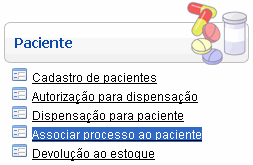
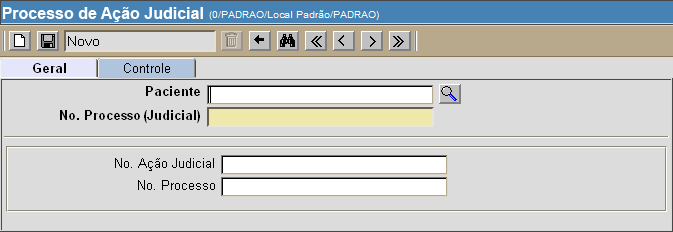

Associar Processo ao Paciente [ Voltar
]
Utilize este formulário para detalhar um
processo judicial de paciente.
O formulário "Associar processo ao paciente" encontra-se
dentro do menu "Paciente".

Ao clicar no nome do
formulário, o sistema exibirá a seguinte tela:

1º Passo: informe os dados do paciente,
processos e ação judicial. Os campos em amarelo são
obrigatórios.
- Paciente.
Clique no
botão
 [Procurar]
ao lado do campo "Paciente"
para selecioná-lo a partir de uma listagem contendo os pacientes
cadastrados no sistema. [Procurar]
ao lado do campo "Paciente"
para selecioná-lo a partir de uma listagem contendo os pacientes
cadastrados no sistema.
- N°. Processo (Judicial).
Informe o número do processo criado na Secretaria de Saúde para esta
ação judicial de paciente.
- N°. Ação Judicial.
Especifique o número da ação judicial de cliente.
- N°. Processo (Compra).
Se houver um processo de compra relacionado a este processo judicial,
informe-o aqui.
2°
Passo: clique no botão  para salvar os dados
informados. para salvar os dados
informados.
Ir para o topo da página
|